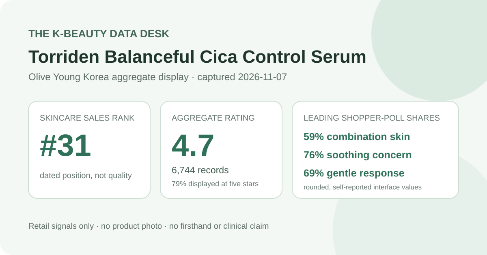
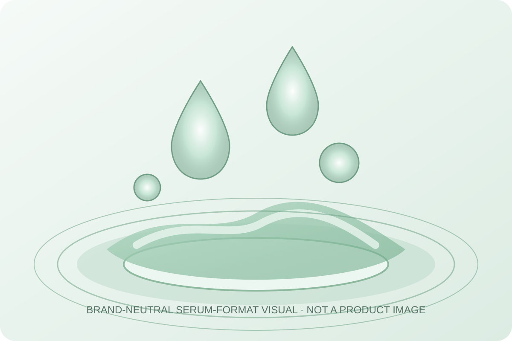

Data captured November 7, 2026. This analysis uses only the retailer's displayed product title, ranking position, aggregate rating, star distribution, shopper polls, and anonymous automated summary. It does not copy or translate individual review text, reviewer names, or photos, and it makes no claim of firsthand use.

The short version: Torriden Balanceful Cica Control Serum appeared at number 31 in the captured skincare sales ranking. Its product header and official review view agreed on 4.7 out of 5 from 6,744 records. Five-star selections made up 79% of the displayed distribution; combination skin and soothing were the leading poll responses, while 69% selected the gentle response. The retailer's anonymous automated summary classified 87% of its recent summary pool as positive. These are retail signals, not proof of calming, hydration, redness reduction, tolerance, or treatment of a skin condition.
The displayed average was 4.7 stars. Olive Young showed 6,744 review records in the product header, and its official review view repeated the same score and total. That consistency matters because it prevents a headline number from one refresh being combined with a distribution from a different listing state.
The detailed view displayed these rounded star shares:
The rows total 100% as displayed. The defensible descriptive reading is that high ratings dominate this retailer pool: 79% was shown at five stars and another 14% at four stars. The combined 93% favorable-end share is a strong satisfaction signal for the listing, but it is not a controlled comparison and cannot identify which part of the formula, routine, purchase offer, or expectation produced the ratings.
A four-digit record base reduces the influence of any single rating, yet it can still combine different purchase dates, package plans, climates, routines, sensitivities, application amounts, and expectations. The average cannot show whether every participant reviewed the current 50 ml serum with 20 ml cream configuration or used the same regional formula.
The skin-type panel displayed 59% combination, 22% dry, and 19% oily. Those rounded shares total 100%. Combination respondents formed the largest group, while dry and oily respondents together still represented more than two in five of the displayed responses.
This is sample representation, not a compatibility score. The interface did not disclose the poll denominator, whether every reviewer answered, how people classified themselves, or what else was in their routines. A 59% combination share does not establish that the serum works best for combination skin, and the smaller dry or oily shares do not justify warnings against those skin types.
The concern panel showed 76% soothing, 23% moisture, and 1% wrinkle or brightening. These rounded rows total 100%. Soothing was clearly the leading response, but it remains a shopper-poll label rather than a redness, inflammation, lesion, or recovery measurement.
No standardized photography, erythema reading, lesion count, inflammation marker, corneometer result, transepidermal-water-loss measurement, dermatologist assessment, comparator, or defined treatment period was captured. The moisture label does not establish increased hydration, and the small wrinkle or brightening response does not prove either outcome.
The irritation panel displayed 69% gentle, 29% ordinary, and 2% felt irritation. The rows total 100%. A majority selected the favorable label, but nearly three in ten chose ordinary and a felt-irritation row was present. Reporting all three is more responsible than describing the serum as universally mild.
The source did not provide a patch-test protocol, allergy screening, severity scale, duration, or medical evaluation. People with known allergies, active skin conditions, a damaged barrier, or a history of reactions should inspect the current regional ingredient list and seek appropriate professional guidance rather than rely on a crowd aggregate.

The retailer categorizes this item as a facial serum. That identifies a routine slot and a generally fluid leave-on format, but it does not verify the product's exact color, scent, viscosity, slip, drying time, residue, tack, layering behavior, or compatibility with sunscreen and makeup. I did not open, dispense, apply, or layer the product.
The local illustration above deliberately avoids depicting the actual product or bottle. It provides only a generic cue for a lightweight liquid-serum format. Real sensory behavior depends on formula, amount, application method, humidity, temperature, preceding cleansing, and later routine steps.
The retailer's automated recent-review summary displayed an 87% positive classification and grouped anonymous discussion around three broad themes: calming or visible-redness impressions, mild-feeling use, and light moisture or non-greasy absorption. These are paraphrased category-level topics, not copied review sentences and not a manual sample of individual comments.
The interface did not disclose the exact number of reviews behind the automated summary, its selection window, model, confidence threshold, or error rate. The summary may compress mixed opinions and can inherit marketing-like language from reviews. It therefore helps identify what people discussed, but cannot prove that the serum changed redness, treated breakouts, caused no irritation, balanced oil, or delivered a specific hydration result.
“Balanceful Cica Control” is prominent listing language, but the captured aggregate interface did not establish a verified current ingredient list, regional formula, centella species or derivative, extraction method, ingredient concentration, or delivered dose for this analysis. The product name cannot substitute for those details.
Likewise, a high rating, leading soothing response, and calming-related summary topic do not show that a cica ingredient reduced inflammation or treated acne. Those conclusions would require a defined formula, appropriate controls, measurements, and a clear time frame. Buyers who care about a specific ingredient should check the current package and official regional label.
Rank 31 describes one moment in Olive Young Korea's skincare sales list. It is not a quality rank and does not mean this was objectively the thirty-first-best skincare product. Promotion placement, discounting, stock, gifts, advertising, and recent demand can all affect the order.
The captured listing showed a 50 ml serum plan with a 20 ml cream, a ₩23,000 reference price, a ₩14,750 displayed promotional price, and temporary sold-out wording. These are dated context, not current buying advice. Confirm the selected option, total volume, stock, formula, coupon conditions, seller, returns, and checkout total on the live listing.
Torriden Balanceful Cica Control Serum was the first valid unpublished product after 30 higher-ranked existing product families or promotional configurations were skipped. The listing passed the consistency check: ranking and detail titles agreed, and both review surfaces showed 4.7 stars from 6,744 records.
The aggregate is favorable: 93% appeared in the four- and five-star rows, combination skin was the largest skin-type response, soothing led the concern panel, and gentle led the irritation panel. The 87% positive automated summary also points to calming, mild-feeling, and lightweight-moisture themes in its undisclosed recent subset. The responsible conclusion stops there. These figures support the product's relevance as a popular serum listing; they do not prove calming, redness reduction, acne control, hydration, universal gentleness, or superiority over another formula.
Both captured review surfaces showed 4.7 out of 5 from 6,744 records, with 79% displayed at five stars.
Combination skin was the largest poll group at 59%, but that describes who answered and does not prove better performance for that skin type.
No. The 76% response is a shopper-poll label without an objective redness, inflammation, lesion, or recovery endpoint.
No. The displayed irritation panel also included 29% ordinary and 2% felt irritation, and no aggregate can predict an individual's tolerance.
No. This is a dated analysis of retailer-displayed aggregates. The generic liquid visual is not a product image or evidence of use.
Source: Olive Young Korea product page (captured November 7, 2026). The live listing, option, price, stock, rating, and review totals may change after capture.
← Back to all reviews · Review-volume ranking · Skin-poll representation · Methodology